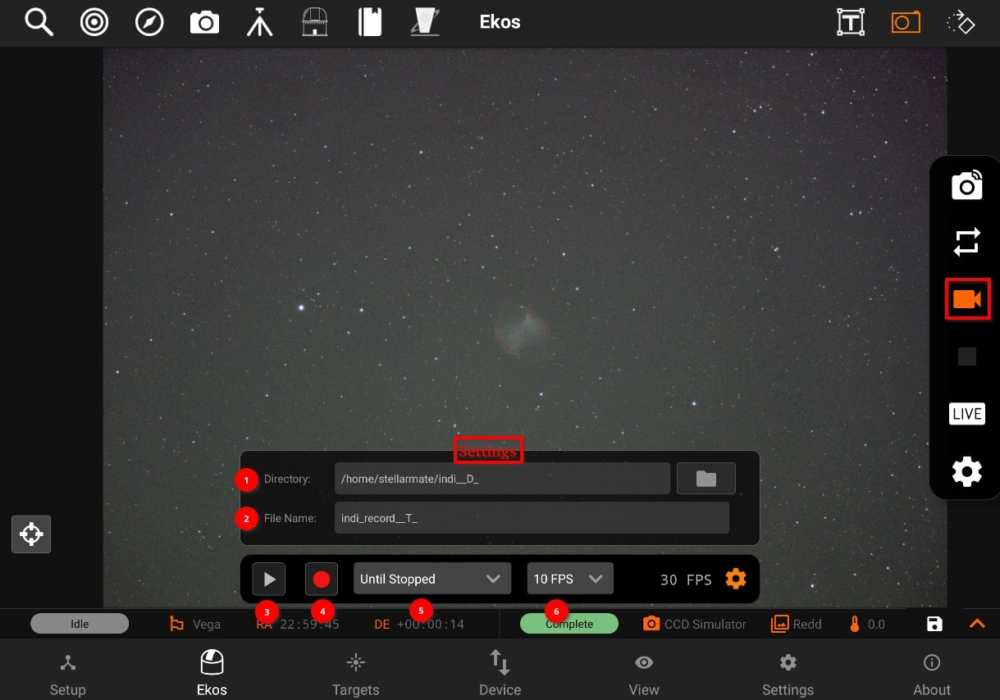

Video Recording

These are the following options in Video Recording:
- Directory: Path of videos is set using Directory browser.
- File Name: Set SER video file name. Record files may contain some patterns to make them dynamic.
- _D_: For the date in YYYY-MM-DD
- _H_: For time in HH:MM:SS.
- _T_: For ISO8601 time stamp.
- _F_: For filter name, if any.
- Play: Enables the video streaming if supported by the camera.
- Record / Stop: Starts the recording, if the recording is started. Icon will be changed to stop icon. So, you can stop the recording.
- Until stopped: Select one from the predefined video durations or select Until Stopped to to make the recording continues until explicitly stopped.
- FPS: Record stream until these many frames are captured
Videos are recorded as lossless SER format. By default, they are saved to the StellarMate Videos directly which can be accessed via Network share on Windows, Mac, and Linux.